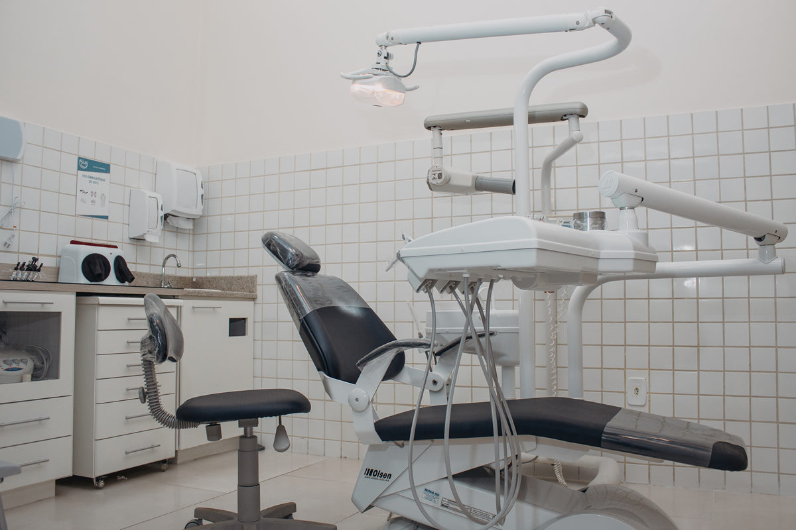

Preservação dental · Clinimed Odontologia
Tratamento de canal: cuidar também é preservar.
A endodontia cuida dos tecidos internos do dente. Quando há alterações na polpa dentária, o tratamento de canal pode ser indicado para tratar o problema e preservar o dente.

Entenda o tratamento
Entenda o papel do tratamento de canal
A polpa é o tecido localizado na parte interna do dente, onde estão nervos e vasos sanguíneos. Algumas condições, como cáries profundas ou traumas, podem comprometer esse tecido e exigir avaliação.
Quando indicado, o tratamento endodôntico envolve limpeza, desinfecção e vedação dos canais internos. A restauração do dente e o acompanhamento posterior também fazem parte do cuidado planejado.
Situações que merecem avaliação
- Dor persistente, sensibilidade importante ou desconforto ao mastigar.
- Alterações observadas em exame clínico ou radiográfico.
- Dentes com histórico de trauma ou cáries extensas.
Conteúdo educativo institucional. A indicação e o plano de cuidado exigem avaliação clínica por profissional habilitado.
Perguntas frequentes
Dúvidas sobre endodontia?
Aqui estão algumas orientações gerais. A equipe pode esclarecer dúvidas específicas durante uma avaliação.
Sentir dor significa que preciso de canal?
Não. A dor pode ter diferentes causas. Apenas uma avaliação profissional pode indicar se há necessidade de tratamento endodôntico.
Todo dente tratado precisa de coroa?
A restauração indicada depende da localização do dente, da estrutura remanescente e da avaliação clínica.
Quando devo procurar atendimento?
Procure avaliação odontológica diante de dor persistente, inchaço ou outros sintomas que preocupem. Em situações intensas, busque atendimento com agilidade.
Continue explorando
Outros assuntos que podem interessar
Fale com a Clinimed
Sua próxima etapa começa com uma conversa.
Atendimento odontológico em Votuporanga. Entre em contato e combine uma avaliação para seu caso.